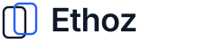
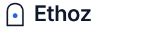
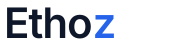

4 iconos originales + acento en la Z. Misma paleta: #0F172A + #2563EB
Dos arcos protectores envolviendo un punto central (el estudiante/dato). Comunica cuidado y proteccion sin ser agresivo. Humano y calido, no corporativo frio.
Dos rectangulos redondeados superpuestos — uno navy, uno azul. Sugiere transparencia, capas de proteccion, y la dualidad privacidad/acceso. Muy limpio, muy tech.


Una "E" construida con lineas y nodos conectados — como un diagrama de datos o circuito. El nodo central en azul es el acento. Sugiere estructura, conexion, y gestion de informacion.
Un arco/portal abstracto con un punto azul central. Representa acceso controlado — la puerta de entrada al colegio. Arquitectonico, solido, distintivo. El punto azul es el control.


El wordmark del Concepto 1 original — combina con cualquiera de los iconos de arriba. La "z" en azul es el detalle distintivo.

Nota: Cada icono se puede combinar con el wordmark "Ethoz" para crear un combination mark. Para produccion, convertir texto a outlines en Figma o Inkscape.